Notes on… borrows its posture from Susan Sontag: fragments, a stance rather than a system, a writer moving between inside and outside the thing described
If Fiat Humanitas was the harvest, the Erasmus+ week in Madrid, read back in order, day by day, painting by painting, then this is the sowing. Fiat Corde is not the week. It is the gesture that comes after: taking what a week gives you and turning it into something you do, with students, in a room, twenty minutes from your school.
This note is not the talk.
The talk was ten minutes, in Portuguese, to a room of teachers, on 15 July 2026.
- The slides live in Fiat Corde;
- The full spoken script, in the language of the room, in Fiat Corde - spoken script.
What follows is the gesture behind the ten minutes, written for those who were not there, and for those who were and want to see the frame around the frame. It has three movements, because the gesture has three times: what Madrid did to me, what I did with it, and why it travels.
I. What Madrid did to me
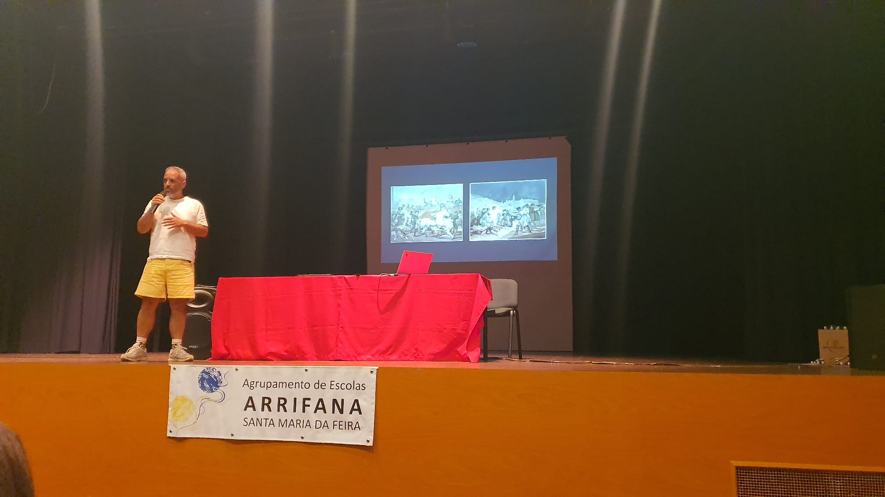
I arrived in Madrid on 3 May 2026. The anniversary of the executions Goya painted. The city was celebrating the revolt of the day before. I had come for a course on Active Methodologies. What the city gave me was not on the syllabus.
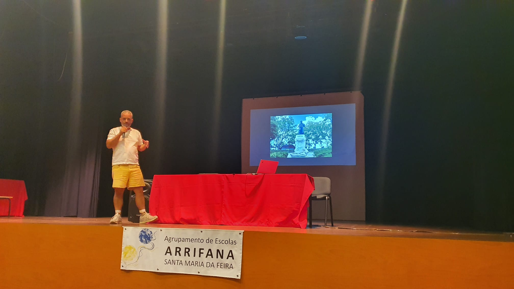
Madrid did not teach me facts. It did something quieter and harder to name: it placed me in front of images and places already loaded with the right question, and let the meaning shift under me. A plaque at the Royal Palace. the Museum of Prado, hung as an argument rather than a tour. Toledo, holding three faiths in the same stone.
And at the centre of it, this painting.
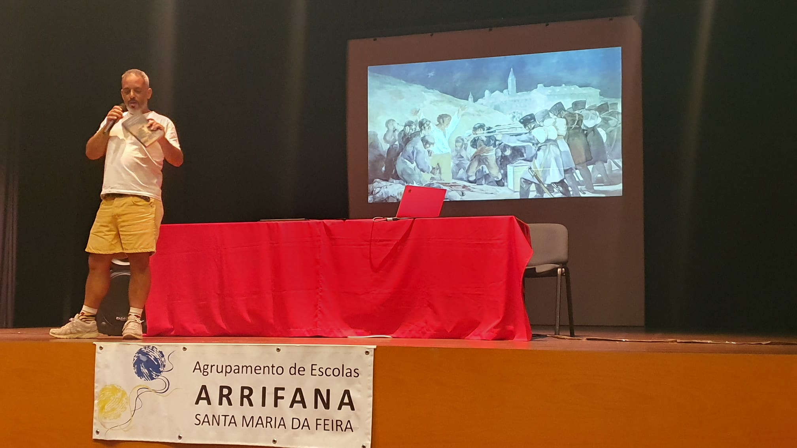
Isto não é um quadro histórico. É uma reportagem de guerra. This is not a history painting. It is a war report.
Standing before the Third of May on the day of its anniversary, I understood something I could not yet say cleanly: that the painting’s power is not its subject but its framing. The firing squad has no face, it’s a machine. The condemned man has a face, arms open, a white shirt, lit from below. Goya chose who we see, who we don’t, whose side we feel. Quem decide? Quem paga? Quem fica fora do frame? Who decides, who pays, who is left out of the frame.
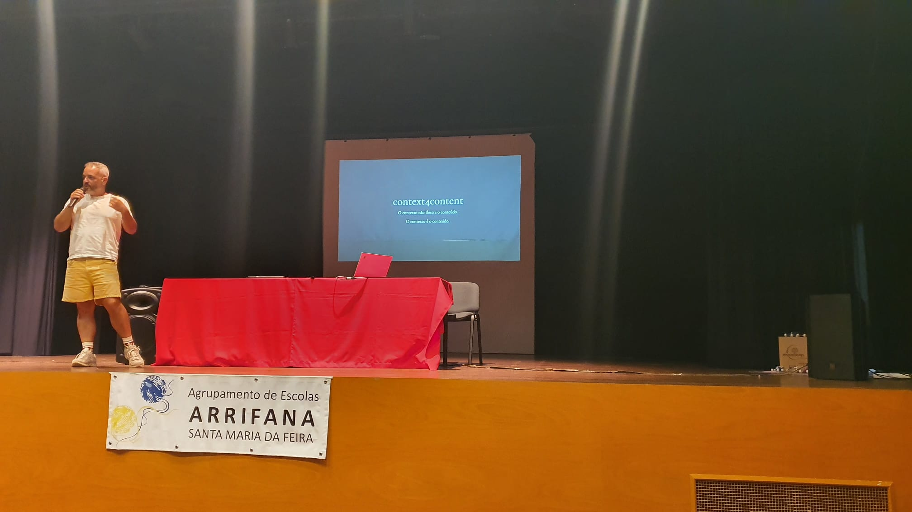
No one in Madrid told me this. Madrid did it to me. I was not given a thesis; I was walked into a question. That distinction became the whole method. It even has a name I kept from the course and made my own: Context4Content, context does not illustrate content, context is content.
II. What I did with it
The test came in June. A class of ten, a module on neuromarketing. Attention, emotion, framing: how images make us decide. I did to them what Madrid had done to me. I did not take them to see an exhibition. I took them to a question.
This is the part that does not photograph well: the preparation. Days before, I walked the rooms of the Centro de Arte Oliva with Daniel, from the mediation team. We chose the route. We designed the questions. An entire afternoon of walking through empty galleries before bringing anyone. Dá trabalho. It takes work. But it is the whole difference between an outing and a lesson.
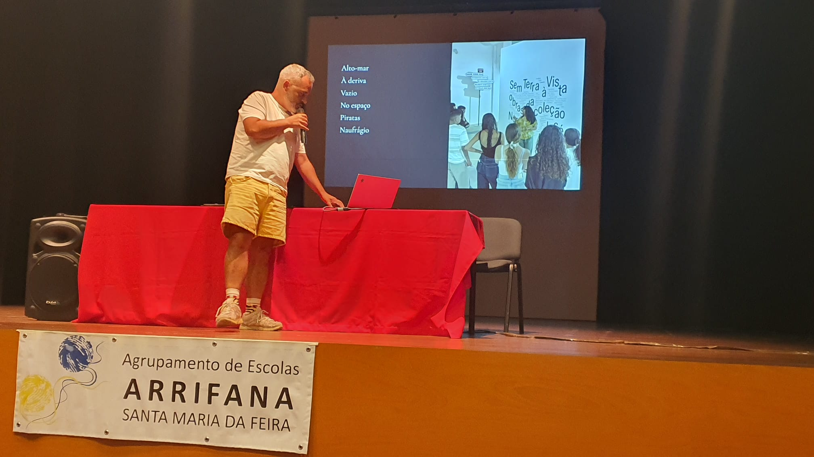
One of the exhibitions was called “Sem Terra à Vista - No Land in Sight”. At the entrance, before the wall bearing the title, the mediator asked:
What do you think this means?
- Open sea
- Adrift
- Emptiness
- Pirates
- Shipwreck.
Inside, one photograph. An Azorean landscape, green and blue and almost idyllic.
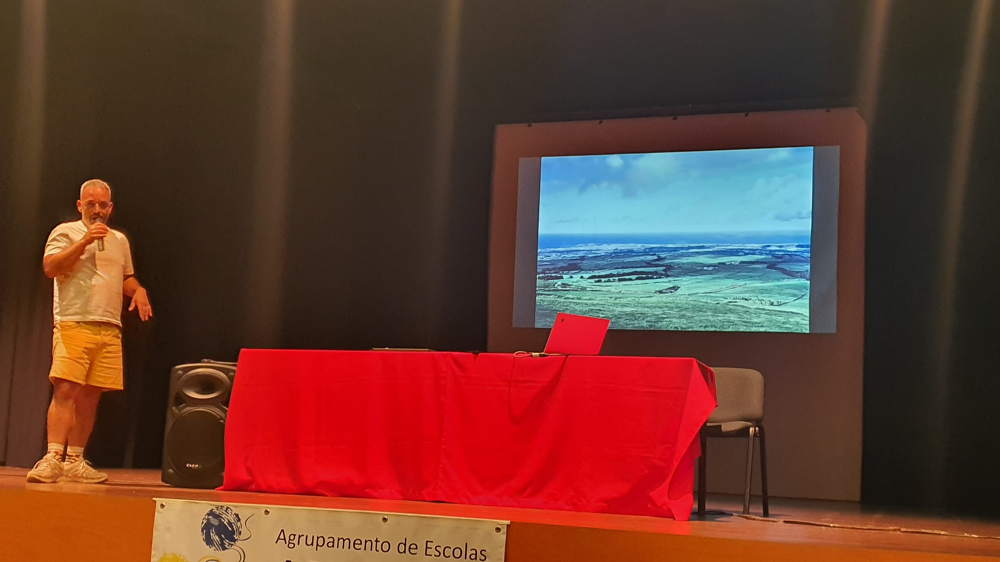
While the students tried to read the image, the mediator handed one of them a newspaper clipping to read aloud: Público, that same day, the prime ministers awaiting Bush at Lajes, the summit still speaking of diplomacy.
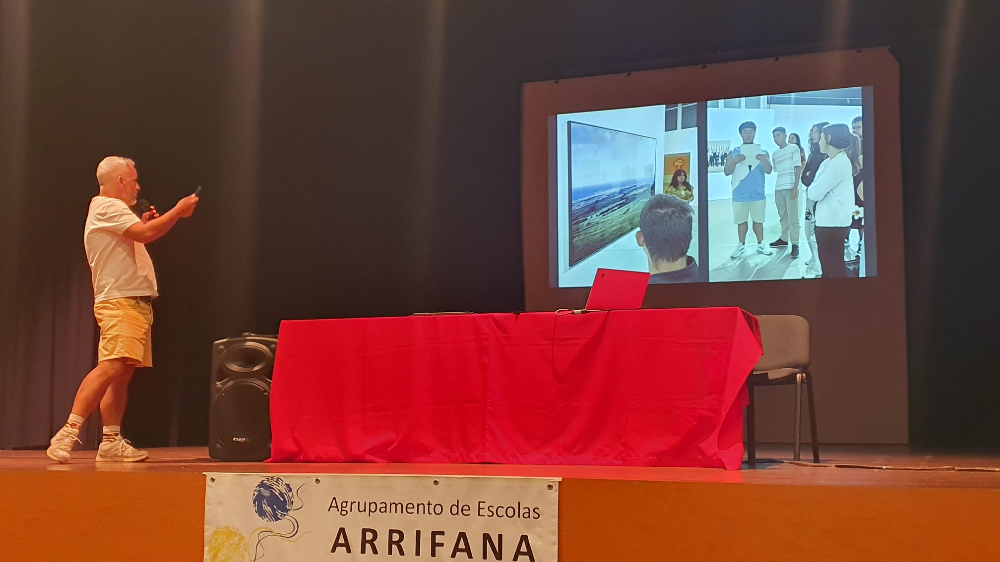
The title is a date: 3.16, 16 March 2003.
Two days later the invasion of Iraq began. The official cameras showed four men at a podium, flags, the peacemakers. Augusto Alves da Silva photographed the silence around them. The landscape changed in front of them.
As the artist wrote of the series:
Photojournalism never produces an impartial image, because no photograph is.
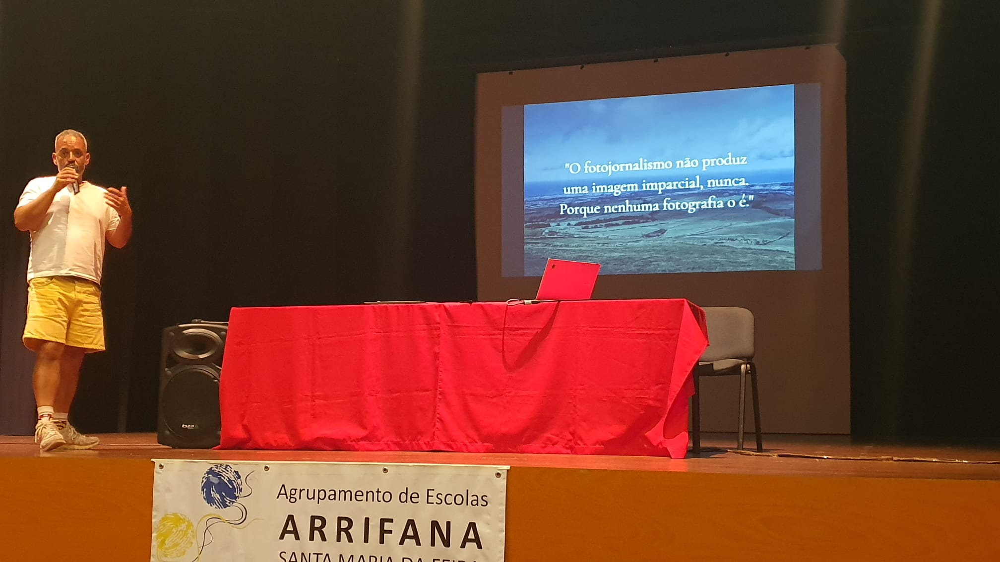
Nada ali estava por acaso. Nada aqui está por acaso. Nothing there was by chance. Nothing here is by chance.
On the way out, the mediator returned to the same wall and asked the same question.
- Migration
- Oppression
- Control
- No control
- And pirates (again pirates, but no longer the same pirates).
The same wall, the same question, one hour apart. Context had changed everything.
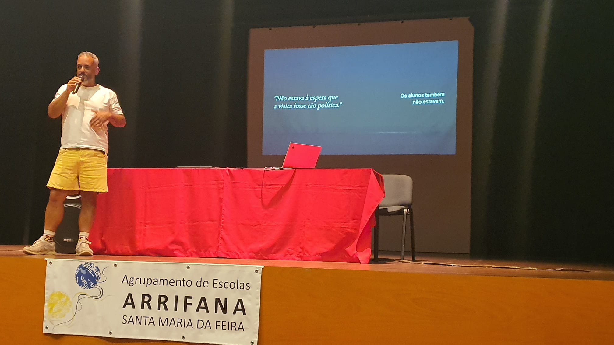
The mediator had not expected the visit to be so political. Neither had the students.
Habituámo-nos a pedir à arte que nos entretenha. We have grown used to asking art to entertain us, and it insists on doing its work anyway.
III. Why it travels
Everything above is small: one class, one afternoon, one photograph twenty minutes from the school. The talk existed to argue that the small thing is not small, that this current is old, and runs everywhere.
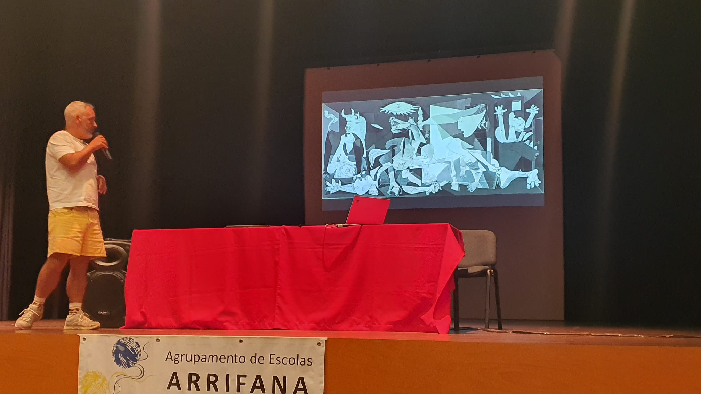
Goya painted an execution in 1808. Picasso painted Guernica from newspaper photographs, a reporter at a distance. Dumile Feni turned it into African Guernica, apartheid in Picasso’s grammar, beneath a title that was itself the thesis: history doesn’t repeat itself, but it does rhyme. Mohammed Al-Hawajri laid Europe’s museum paintings over photographs of Gaza (including the Madrid execution, happening again). Guernica. O apartheid. Arrifana. O Iraque. Gaza. Rimam.
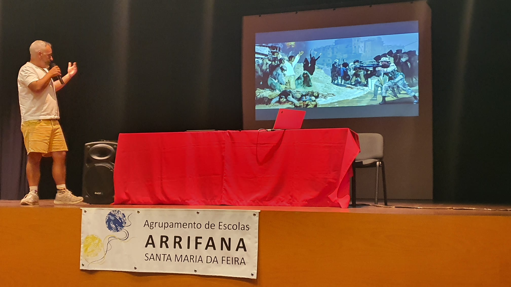
And there is a painting with no image, because no one made it. On 17 April 1809, the same troops that Goya painted laid siege to Arrifana (the town where my school now stands). One in five men was shot: “os Quintados”. Goya made the El 3 de mayo en Madrid into universal memory. Arrifana had to wait two centuries for a re-enactment. Só não teve pintor. It just had no painter.
This is the line the whole talk turns on. Judith Butler, in Frames of War, asks which frames make a life grievable. Arrifana is the answer in the negative: a death no frame rendered mournable, because no one framed it at all.
To decide the frame is to decide who is grieved
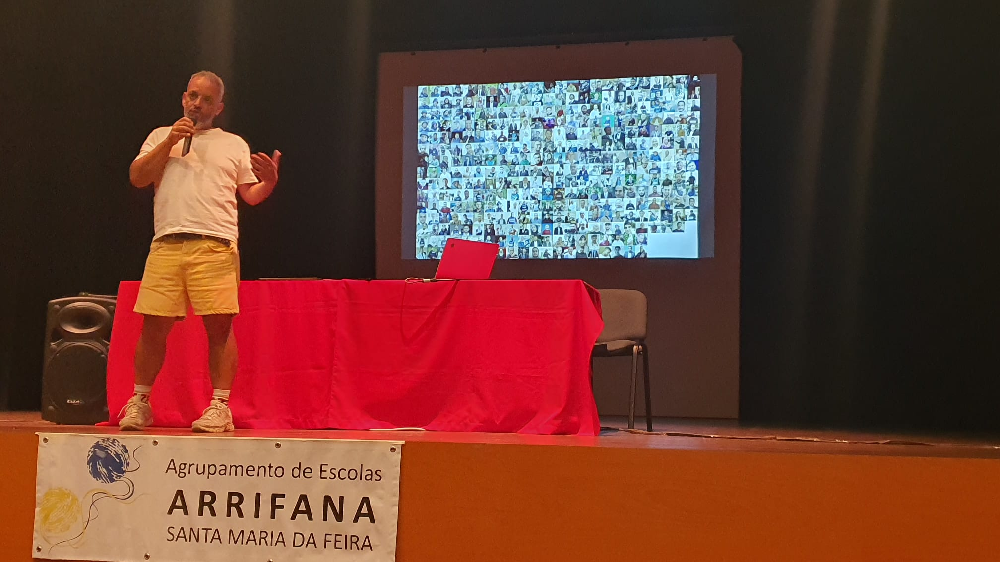
Which is why the small classroom gesture is not small. Since October 2023, more than two hundred journalists have been killed in Gaza. More than in both World Wars, Vietnam and Afghanistan combined. And the images keep coming, at the cost of the lives that make them. On World Press Freedom Day, which is also, as it happens, the date of Goya’s painting, the question is no longer academic.
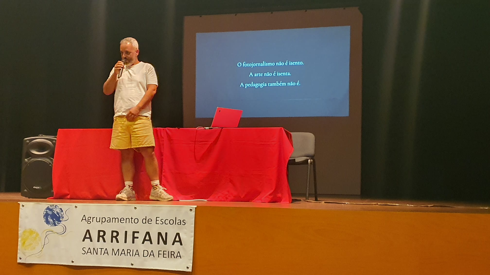
- Photojournalism is not neutral.
- Art is not neutral.
- A pedagogia também não é. Neither is teaching.
The moment I choose what my students see, and from where, and with which question, I have framed. There is no innocent position behind the camera, or in front of the class.
Coda: the unrest of the method
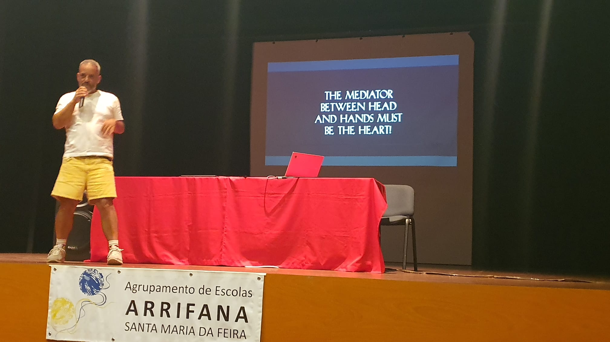
To teach this way is to give up the comfort of neutral ground. It is more work: the afternoon in the empty gallery, the question designed and redesigned, and it offers no safe distance.
If context is content, then every choice of context is a choice of meaning, and the teacher who frames is answerable for the frame.
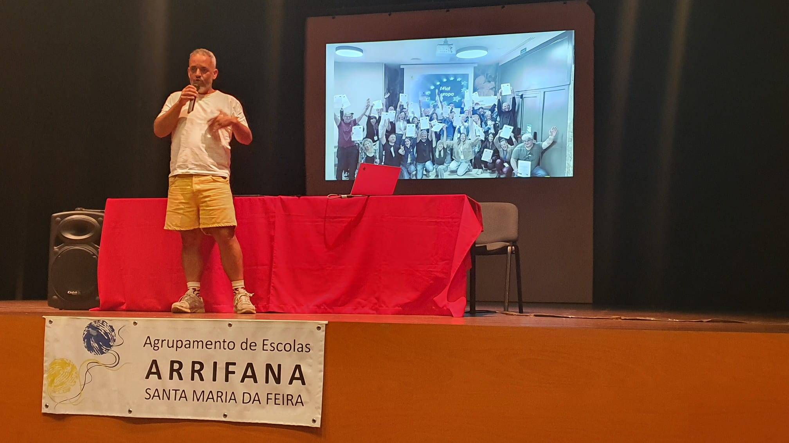
On the last day in Madrid, in the session on Dissemination Strategy, the coordinator said something I carried home:
We teachers do extraordinary things and are not aware of it.
And then, almost an order:
Write. You are the intellectuals.
This note is part of that writing: the seed, scattered, that gives Footscapes its name.
In Hoje 3 de maio, Patrícia Portela refuses to tell the story in order. She offers many ways to read; in one, you open the book at the page of this painting, choose a detail, and begin the journey there. The reading ends when there is nothing left to discover.
I could have chosen the man in the white shirt. I chose the one who painted him. And I arrived here.
But the method does not let you arrive. Every prepared visit opens the next question; every frame admits the one left outside it. To teach through context is to stay in open water on purpose.
Eu comecei a minha viagem agora. E já não tenho terra à vista. I have only just begun my journey. And there is no land in sight.
Fiat corde. Love, love is a verb, love is a doing word.
Expanding the Landscape
Further reading and reference for those who want to go deeper.
- On framing as an act: John Berger, Ways of Seeing; Judith Butler, Frames of War (the frame that decides which lives are grievable); Jacques Derrida, The Truth in Painting (the parergon, the frame that produces its object).
- On the shot (image and weapon): Paul Virilio, The Vision Machine (the optical arsenal, from the line of sight of the firearm to the camera); Harun Farocki, Images of the World and the Inscription of War (camera, rifle, satellite, surveillance: one optical logic).
- On the works: Goya, El 2 de mayo de 1808 en Madrid and El 3 de Mayo (Museo del Prado); Picasso, Guernica, and Dumile Feni, African Guernica (Museo Nacional Centro de Arte Reina Sofia); Mohammed Al-Hawajri, Guernica-Gaza.
- On the photograph at the Oliva: Augusto Alves da Silva, 3.16, 2003 (Coleção Norlinda e José Lima).
- On the novel that shares the painting: Patrícia Portela, Hoje 3 de maio (2024).
- Companion pieces:
- Fiat Humanitas (the week that came before)
- Fiat Corde (the slides)
- Fiat Corde - spoken script (the full script).
Part of Fiat Corde. LearningExperienceDesign ContextForContent